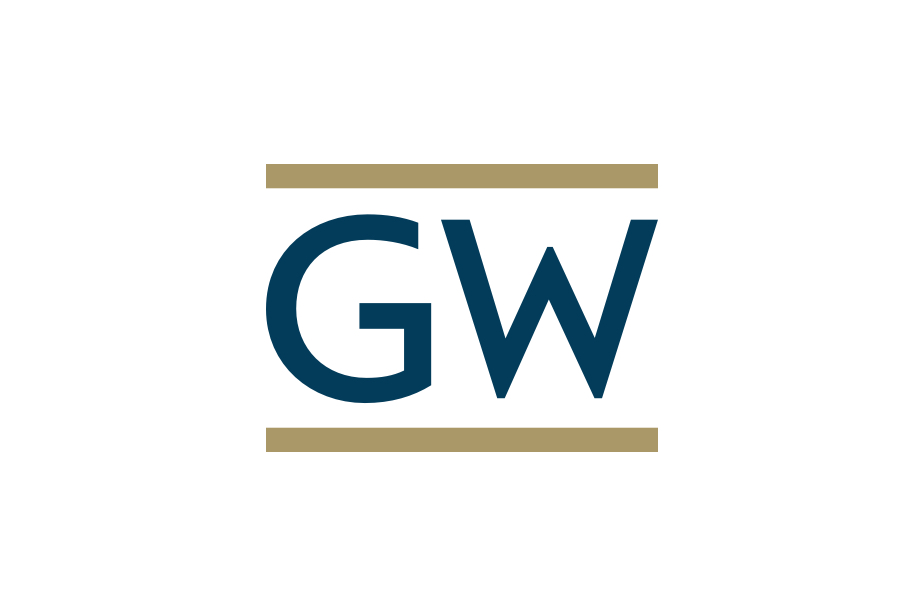
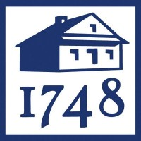
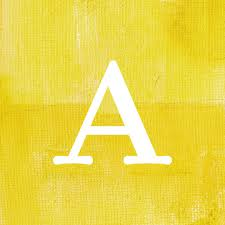

Marie DeVoll
Home
Education & Employment
Skills
Projects
Contact me
Education

George Washington University 📍 Washington, D.C.
2018 - 2022
BA in Sociology
I studied sociology with a special interest in social cues and social norms

Wilmington Friends School 📍 Wilmington, DE
2014 - 2018
High School Diploma
I recieved IB (international baccalaureate) certificates in biology, art, and english. I was on the varisty volleyball team and track team and part of the LINK crew, which welcomed new students to the school
Work Experience

Anthropologie📍Philadelphia, PA
2022 - Present
A global lifestyle brand that specializes in apparel, accessories, intimates, home furniture, décor, beauty, garden, & bridal